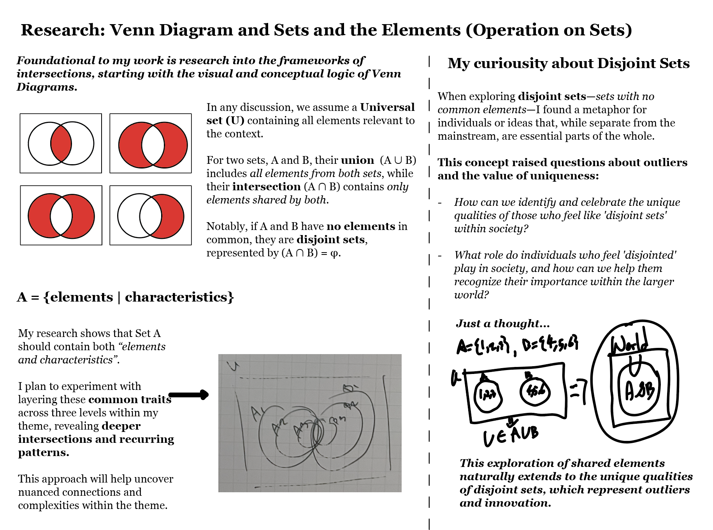
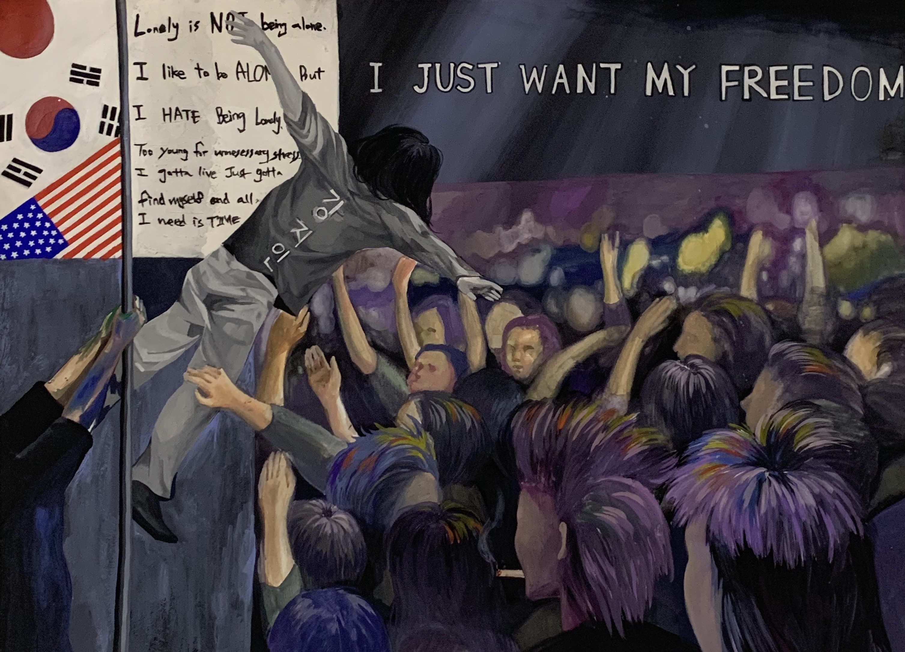
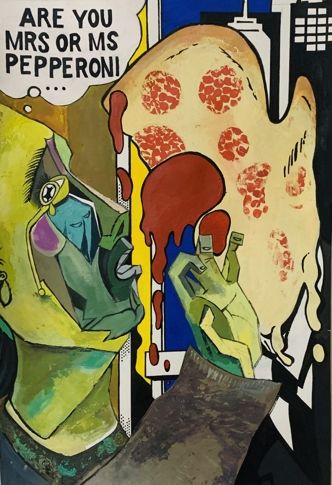
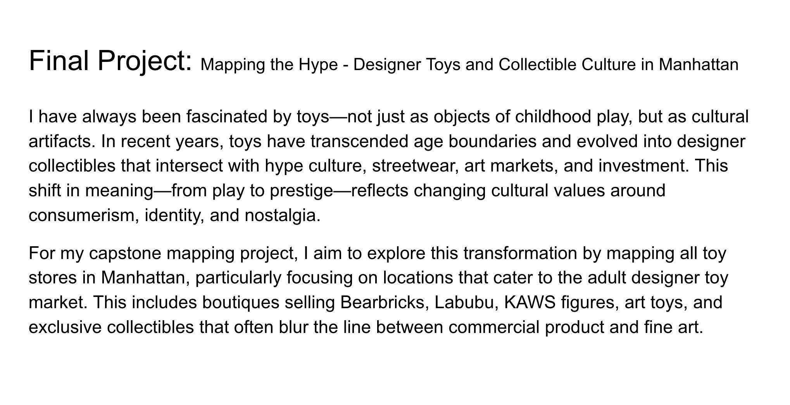
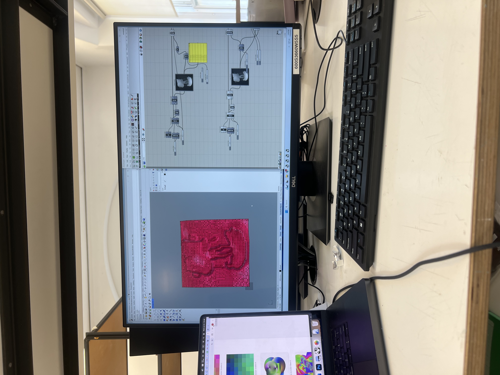

Final Project
Title:
"Disjointed" - When exploring disjoint sets—sets with no common elements—I found a metaphor for individuals or ideas that, while separate from the mainstream, are essential parts of the whole.
Research question(s):
- What questions does your project raise?
- How did toys become a medium for collectibles/investing methods? What is mainstream? Why are some artworks valued more and considered mainstream?
- What roles do collectibles play in translating cultural identity, marginalization, and economic value into tangible form?
- What are you curious about?
- My curiosity stems from personal experience. As a Korean American who spent early academic years in international school and later pursued undergraduate studies in Tokyo—while most of my friends attended college in the U.S.—I often felt disjointed, unsure of where I truly belonged. This internal ambiguity intensified as I navigated environments that didn't mirror my own multicultural, interdisciplinary background. While my friends pursued careers in finance and my classmates came from traditional design backgrounds, I often questioned where I fit in. This lifelong feeling of uncertainty led me to the concept of disjoint sets and the Venn diagram, which I now use as both a visual and conceptual metaphor for identity. Having studied Economics in undergrad, I became familiar with set theory, and I was struck by how the Universal Set could represent the world at large—while subsets, intersections, and exclusions mirror how identities are formed, fractured, and sometimes left out. I have long been fascinated with art as a medium of self-expression. I was drawn to the beauty of color harmonies and the way different visual elements can evoke different meanings. As I grew older, I found myself immersed in digital art, contemporary design, street fashion, and hype culture, where artificial scarcity is used as a tactic to generate both value and community. I want to understand how value is constructed in the art world. Ultimately, I'm curious about how I can embed my personal experiences and questions into a practice that is both critically reflective and economically aware, bridging aesthetics, identity, and market logic through collectible art forms.
- Before, my artworks used to focus on painting as a self-expression medium. Now I want to make something that can be obtained in more practical collectibles, whether that is through illustration, comic books, or board games that could represent identity in more resonant spaces.
  - Does your work connect to societal discussions and debates taking place at the moment?
- My work is directly engaged with several contemporary societal debates—particularly around identity, value systems, cultural production, and the commodification of art. As someone navigating hybrid cultural experiences, my project reflects a growing conversation around third culture identity and how displacement, hybridity, and cultural ambiguity shape our sense of belonging. This resonates with broader societal discussions on diaspora, global mobility, and cultural marginalization, especially in increasingly interconnected yet fragmented societies.
- The project also intersects with ongoing debates in the art and design world about artificial scarcity, value construction, and speculative economies. Within the worlds of collectibles, hype culture, and NFTs, questions are being raised about:
- Who has the power to assign value to objects or artworks?
- How are communities built through consumption, exclusion, and rarity?
- How is cultural capital performed or gamified?
- By working with art toys and visualizing disjoint sets, I engage with these systems both critically and creatively. My work questions how marginalized or non-mainstream identities navigate and find visibility in spaces that are often driven by exclusivity, market logic, and hype-driven trends.
- Does your work touch on policy proposals for the future of technology and its regulation?
- Yes, my work engages with questions surrounding the regulation and future direction of decentralized technologies, particularly through the lens of NFTs, artificial scarcity, and the cultural mechanics of hype. As someone who has personally launched an NFT project, I've seen both the potential and the limitations of these technologies. While the blockchain ecosystem is often celebrated as a decentralized alternative to traditional systems, the reality is that decentralized systems do not guarantee decentralized power.
- NFTs, at their peak, were positioned as a revolutionary model of ownership and artistic autonomy. However, power still remained concentrated—in elite collectors, major platforms, and the influencers who could move markets with a single post. Even in DAO (Decentralized Autonomous Organization) structures, the underlying currencies and infrastructures are often still tied to centralized systems, whether through exchange platforms, pricing volatility, or tech monopolies.
- What's particularly revealing is how mainstream artists like Takashi Murakami entered the NFT space. Murakami's "Murakami.Flowers" project attempted to bridge his iconic visual identity with Web3 technologies. Initially, he struggled to grasp the nuances of the ecosystem and even paused the project to re-evaluate its market dynamics—highlighting that even established artists are vulnerable to the volatile, speculative logic of the NFT space.
- The fact that high-profile artists embraced NFTs shows how hype cycles and artificial scarcity are not just subcultural tactics but part of a broader economic and aesthetic system that extends into fine art, fashion, and design. My work critiques this system and proposes policy-based and algorithmic alternatives—such as randomized distribution systems, equity-driven smart contracts, and artist-controlled marketplaces—to rethink how value and access are governed.
- Does your research question a socio-technical problem?
- Disjointed directly addresses a core socio-technical problem: how both social systems and computational structures encode and reproduce inequality through invisible rules, value hierarchies, and barriers to access.
- By translating complex frameworks from game theory and auction theory into accessible formats like board games, collectible toys, or comic books, the project exposes how individual identity and collective agency are constrained—not by explicit laws—but by the design of systems themselves. These systems may appear neutral or playful on the surface, but they often embed structural biases, making it difficult for marginalized groups to "win" or even participate on equal footing.
Keywords (6):
Collectibles, Pop/Hype Culture, Market Dynamics in Capitalism, Game Theory/Auction Theory, Artificial Scarcity
3 Intersecting Fields:
- Art Collectibles
- Game Theory & Auction Theory
- Set Theory: Visual Representation through Venn Diagram
Historical Lineage:
- What historical lineage does your work emerge from?
- Disjointed emerges from a multidisciplinary historical lineage that spans conceptual art, critical design, game theory, and speculative aesthetics. It draws from traditions where art is not merely decorative or expressive, but a tool for interrogating systems of power, economics, and identity.
- Sarah Meyohas, whose BitchCoin project reimagines value systems through art and finance;
- KAWS and Tom Sachs, who blend high art with collectibles, creating commentary on hype culture, consumerism, and value.
- Also, Monopoly is one of the precedents that I want to look into while using the critique of capitalism into a board game.
- What trajectory are you continuing?
- With Disjointed, I am continuing a trajectory of artists and designers who use games, collectibles, and speculative systems to interrogate power, value, and identity. This includes the work of conceptual artists, critical designers, and those who blur the line between art object and market commodity.
- I build on the legacy of artists like Sarah Meyohas, whose projects like BitchCoin challenge financial and aesthetic value by embedding them within blockchain systems. Her ability to reframe economic structures as aesthetic experiences mirrors my interest in using game theory and auction logic as tools for unpacking how identity and value are strategically constructed.
- I also draw from the world of designer toys and hype culture, where figures like KAWS and Tom Sachs have turned consumer goods into high-value art objects.
- Takashi Murakami is also one of the artists I want to refer to.
- Auction Theory:
- Manufacturing Desire: Artificial Scarcity in Art Toy Collectibles and the Possibility of Algorithmic Intervention
- Artificial scarcity is a design and market strategy in which creators intentionally restrict the supply of a product—regardless of actual production capacity—to create exclusivity and amplify consumer desire. While this tactic is often associated with luxury goods and streetwear, it has become central to the world of art toy collectibles, where scarcity is not just a marketing mechanism, but part of the artistic and cultural value system.
- Through this theory I want to explore how artists such as Takashi Murakami, KAWS, and Tom Sachs have adopted and shaped this model, embedding scarcity into their artistic practices. It also proposes potential solutions to mitigate the inequities of artificial scarcity, particularly in high-demand product drops. Drawing from market design theory, I outline how algorithmic tools like Random Serial Dictatorship (RSD) and Top Trading Cycles (TTC) could be used to reform distribution models for both primary and secondary markets—without sacrificing brand value or artistic integrity.
- In the collectible art toy world, scarcity is not just a byproduct—it is engineered. The practices of Murakami, KAWS, and Sachs illustrate how hype, drop culture, and manufactured exclusivity have redefined how art is distributed and valued.
- Takashi Murakami has collaborated with brands like Louis Vuitton and created collectibles through his Kaikai Kiki studio. His limited-edition releases of figures such as Mr. DOB or Flower Plush toys turn mass-production aesthetics into rare, desirable icons. The deliberate limitation of each drop converts his work into speculative assets while retaining pop accessibility.
- KAWS (Brian Donnelly) embodies this practice most vividly. His Companion figures and collaborations with Uniqlo and Dior are released in intentionally small batches—often resulting in resale markups that far exceed their retail prices. KAWS's practice blurs the lines between art and product, with scarcity fueling both cultural cachet and financial speculation.
- Tom Sachs's approach to scarcity is more conceptual. His "Shop" exhibitions and NIKECraft Mars Yard Shoes are tied to themes of labor, ritual, and exclusivity. Sachs not only restricts access to his collectibles but often requires buyers to engage in tasks, performances, or "tests" to earn them—making scarcity part of the narrative of worth.
Your community of practice:
My project Disjointed operates within a broader ecosystem of artists, designers, and theorists who navigate the tensions between collectibility, identity, market logic, and access. The following figures have profoundly shaped how I think about value, scarcity, and belonging — not as people to critique from a distance, but as practitioners whose work I deeply respect and want to expand upon.
KAWS (Brian Donnelly)
What he's doing: Creating emotionally resonant collectible characters that exist at the intersection of streetwear, pop culture, and fine art. His work masterfully taps into nostalgia, emotion, and universality — all through his signature characters like Companion.
Questions he raises: How can art and toys evoke shared emotion and create global cultural icons?
Approach: Builds tight-knit ecosystems of desirability through limited drops and brand collaborations. Moves fluidly between commercial and gallery spaces.
My relation: Inspired Extension — I deeply admire KAWS's ability to give emotional depth to objects and blur the high/low art divide. Rather than critiquing him, I'm interested in expanding the world he helped create by asking: Can we retain the emotional resonance of collectibles while reimagining the fairness of how they're accessed and distributed?
Takashi Murakami
What he's doing: Blending Japanese fine art traditions (like Nihonga) with anime, manga, and luxury fashion. Through his theory of Superflat, he critiques the consumer-driven flattening of cultural value.
Questions he raises: How does globalization reshape national identity and aesthetic depth? What happens when trauma, pop culture, and capital converge?
Approach: Uses repetition, commercial saturation, and cultural motifs to explore postwar Japanese identity.
My relation: Reinterpretation — I engage with Murakami's exploration of cultural hybridity and postwar identity formation, especially as someone from a third-culture background. Where he aestheticizes flattening, I map disjointedness structurally, through logic systems, set theory, and algorithmic design.
Tom Sachs
What he's doing: Creating handcrafted installations, performance-based rituals, and DIY consumer artifacts. His work ritualizes labor and discipline while exposing the absurdity of corporate systems.
Questions he raises: How do we assign value and belief to things? What does labor mean in an age of automation?
Approach: Operates through transparency, imperfection, and repetition. Fuses NASA mythology, Japanese tea ceremony, and raw materials to build alternate cosmologies.
My relation: Fork / Advancement — Sachs's systems-based thinking and labor-driven aesthetics resonate deeply with me. I extend his logic by introducing algorithmic fairness and game theory, turning performance into policy design and rethinking access to value.
Sarah Meyohas
What she's doing: Using finance, AI, and conceptual systems to explore how value is constructed and performed. In works like BitchCoin and Cloud of Petals, she turns speculation into aesthetic experience.
Questions she raises: What is the currency of beauty? How do labor, data, and desire interact under capitalism?
Approach: Treats markets, data, and blockchain as visual and performative media. Her work is both elegant and infrastructural.
My relation: Conceptual Alignment / Alternative Proposal — Like Meyohas, I'm interested in the aesthetics of systems. But while she leans into the speculative potential of emerging technologies, I pivot toward redistribution, matching algorithms, and fairness, proposing not just an aestheticization of value, but a restructuring of it.
Summary of My Position
Rather than rejecting or critiquing these artists, I see my work as a dialogue with them. I'm building on the worlds they've opened — using the same tools (toys, systems, scarcity, speculation), but reconfiguring them toward equity, transparency, and identity-centered storytelling. Disjointed is a fork, a reimagining, and a redistribution of value systems that have traditionally centered exclusion, speed, and capital.
Audience vs. Community of Practice
Community of practice: I'm in conversation with artists, designers, and cultural theorists who explore value, identity, and systemic aesthetics. This includes toy artists, NFT creators, conceptual performers, and speculative designers.
Audience: My audience extends beyond that — to third-culture individuals, collectors and fans of art toys, and those curious about how systems shape their sense of access, belonging, and agency. I want Disjointed to feel both emotionally honest and systemically radical — an artwork that you can hold in your hand and also use to question the world.
After researching about people working in the space I am interested in, I realized that 3 artists other than Sarah are deeply rooted in Japanese culture. While coming from distinct backgrounds, KAWS, Takashi Murakami, and Tom Sachs all maintain a profound and complex engagement with Japanese culture—each drawing on its visual systems, craft traditions, or consumer rituals to inform their artistic language. Murakami, a native of Japan, grounds his entire practice in postwar Japanese identity, merging traditional Nihonga painting with otaku, anime, and kawaii aesthetics to critique cultural flattening under American imperialism. His theory of "Superflat" became a conceptual bridge between historical Japanese visuality and contemporary mass culture. KAWS's relationship to Japan emerged through collaboration: his early partnerships with Japanese toy producers like MEDICOM TOY and fashion icons like NIGO positioned him within the heart of Tokyo's streetwear and sofubi (soft vinyl toy) scene. Japan gave him the cultural infrastructure to legitimize collectible toys as art, long before Western markets caught on. Tom Sachs, though American, is drawn to Japan's ritualistic precision—especially the discipline of craft, tea ceremony, and wabi-sabi imperfection. His "Tea Ceremony" installation and rigorous studio rules echo a deep respect for Japanese aesthetics as systems of meaning, not just style. For all three artists, Japan is not just a source of visual inspiration—it is a conceptual space where ritual, repetition, value, and identity are constantly negotiated.
Situated Technology:
Just like how most of the readings reminded me about the idea of how Data is not neutral; Designer toys are not neutral. They are entangled in market logic, social signaling, and urban economies. By mapping where and how toys circulate and how scarcity is engineered, I position the project as a critique of extractive cultural mechanisms masquerading as "play." The city itself becomes a platform for value construction, and I use computational tools to make that visible.
Ultimately, within the CDP theme of Situated Technology, my project from Mapping Systems uses mapping and data to situate the abstract concept of "value" into physical space—Manhattan toy stores.
Methods:
Tools & Techniques:
Hand Sketches, Adobe Illustrator, Grasshopper: turning 2D object into 3D (image sampler), p5.js for design variations for patterns, Maybe Blender
Qualitative Methods:
- Visual and formal analysis of existing designer toys (e.g., packaging, release language, collaboration styles).
- Critical theory research into artificial scarcity, consumer psychology, and cultural capital.
- Interviews or informal conversations with collectors, store employees, or designers to understand personal experiences with drops, hype, and collecting behaviors.
- Speculative design experiments that prototype scarcity-driven toy concepts as critical artifacts.
Quantitative Methods (Only selectively, to contextualize the cultural dynamics):
- Tracking price fluctuations or resale trends of certain designer toys.
- Number of editions/releases and their market impact.
- Temporal data around drops (e.g., how fast items sell out).
Project Components:
Physical Fabrication, Prototyping
Computational Design Experiments:
Write about your computational design experiments here...
Random Gradient Generator:
I have been obsessed with creating randomized p5.js code to generate different gradient. This p5.js sketch creates a random gradient pattern by interpolating between four corner colors and adding gentle noise for organic variation.
Generated Artworks:
Customizing Color Using p5.js and Putting on My Design:
Figuring out the ways to utilize Grasshopper to create different variations in 3D form:
Visual Representation:
What aesthetic modes are inspiring you?
The aesthetic modes that inspire me are rooted in the world of collectible art toys, where emotional resonance, cultural hybridity, and serialized form converge. I am particularly drawn to artists like Takashi Murakami, whose Superflat visual language collapses distinctions between high art and mass culture, combining playful, kawaii elements with unsettling undertones that reflect Japan's postwar identity crisis. Murakami's Mr. DOB figures represent both chaos and cuteness—a duality that resonates with my own experience navigating disjointed identities. I am also influenced by the Bearbrick series, which serves as a modular canvas for remixing pop culture, fashion, and political art. These figures reflect how surface and form can carry deep layers of symbolic meaning, becoming both artifacts of consumer desire and platforms for cultural commentary. Additionally, the white layered Astro Boy–like figure reflects a computational aesthetic, rooted in digital fabrication, repetition, and parametric logic—aligning with my interest in game theory, algorithmic fairness, and systemic design. These aesthetic traditions—ranging from Japanese otaku culture to remix capitalism to CNC-inspired abstraction—help frame my visual language as one of modular fragmentation, recursive identity, and playful critique. I see myself as situated within this community of toy-based storytelling and system-aware design, but I aim to reimagine the rules of access and distribution that currently govern who gets to participate in collectible culture.
I will have to do more research on visual representation for Sarah Meyohas.
Rhetorical Argument:
- What is your central argument or claim?
- What evidence or reasoning supports this argument?
- How does your project contribute to broader conversations or debates?
With Disjointed, I argue that identity, access, and value are not neutral—they are strategically constructed within systems that reward conformity and scarcity. By appropriating the language of collectibles, game theory, and visual set theory, I critique how both social and computational systems—whether board games, NFTs, or auction platforms—encode inequality through their rule structures. The project explores how cultural capital and visibility are gamified in contemporary art and hype culture, revealing how even identity becomes a strategic performance shaped by system design. Design, in this context, becomes both the tool of critique and the space of play, allowing me to question the fairness, inclusion, and absurdity of the structures we often accept as natural.
Outline of a potential capstone project:
Disjointed will take the form of a speculative board game, collectible toy series, and interactive digital visualization. The game uses visual set theory and game mechanics to explore how players must navigate disjointed identities—those excluded from dominant cultural categories—to acquire cultural capital. Each collectible character represents a marginalized identity or hybrid figure navigating auction dynamics, artificial scarcity, and market logic. Inspired by artists like KAWS, Murakami, Tom Sachs, and Sarah Meyohas, the project bridges aesthetics with system critique. The final outcome may include:
- A series of physical or digital game pieces (toys) reflecting identity types
- A board game or algorithmic simulation with rules derived from auction theory and set logic
- An installation or comic-style instruction manual that situates the work in collectible hype culture
The Challenge:
While my background in painting and 2D graphics equips me with a strong sense of visual composition, character design, and storytelling, a major challenge in realizing Disjointed is the technical leap into 3D modeling and procedural generation. The project calls for a system that can generate collectible character forms based on game-theoretic traits—an area where I currently lack fluency in tools like Blender, Grasshopper, or Unity. Ideally, I would collaborate with someone who has advanced experience in computational design to build these systems more fluidly. However, if collaboration isn't possible, I plan to dedicate the summer to learning the 3D modeling skills necessary to prototype a simplified but conceptually rich version of the system. This challenge not only reflects a technical gap but also marks a meaningful point of growth for me as I expand my practice from 2D to systemic, interactive forms.